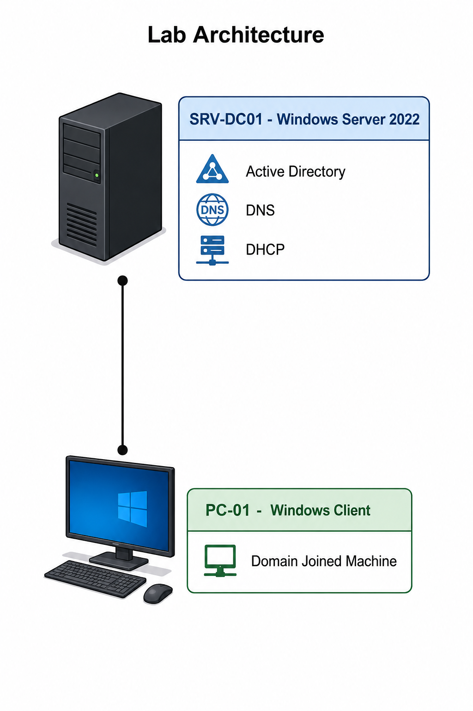

Windows Server 2025
Windows Server Home Lab
Active Directory • DNS • DHCP • Hyper-V • Enterprise Networking
Description
- This project demonstrates the setup of a Windows Server 2025 Home Lab that simulates a small enterprise network environment.
- It includes the installation and configuration of Active Directory, DNS, and DHCP services, along with a Windows client joined to a domain.
- The goal of this project is to develop hands-on skills in Windows Server administration, network infrastructure setup, and enterprise IT operations.
Objectives
Install Windows Server 2025
Configure Active Directory
Configure DNS
Configure DHCP
Join Windows Client
Practice Troubleshooting
Technology Used
Windows Server 2025
Windows 10 / 11
Active Directory
DNS Server
DHCP Server
Hyper-V
Network Topology

Network Configuration
Server IP: 192.168.10.10
Subnet: 255.255.255.0
Gateway: 192.168.10.1
DNS: 192.168.10.10
DHCP Range: 192.168.10.100 - 192.168.10.200
Implementation Steps
1. Create Virtual Machines
Two virtual machines were created to simulate a basic enterprise environment.

SRV-DC01
Windows Server 2025 used as the Domain Controller.

PC-01
Windows 10 / 11 client machine joined to the domain.
2. Install Windows Server 2025
- Windows Server 2025 was installed on the SRV-DC01 virtual machine.
- The server was renamed to SRV-DC01 for proper network identification.